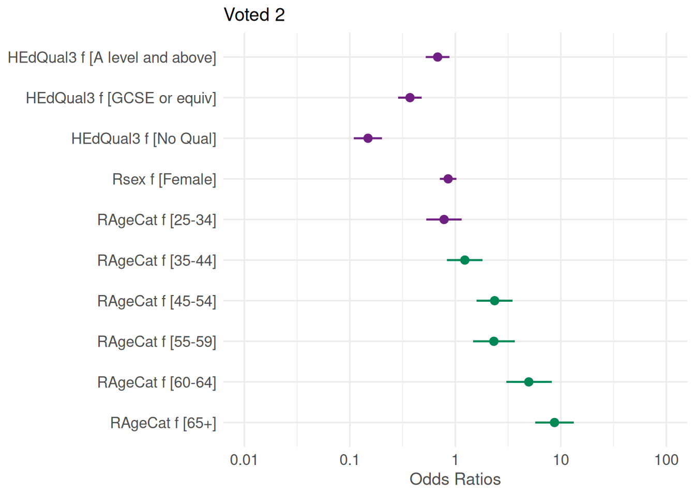

Regression is one of the most common modelling tools used in social science. The glm() function from Base R can be used for fitting linear and non-linear models. These include OLS regression, logistic/probit regression, and more generally any model falling under the Generalized Linear Model (GLM) framework.
In this section, we will use it to investigate the association between the level of education and whether someone voted or not at the last general elections. But let’s first briefly explore the variables using the class() and table():
class(bsa$HEdQual3.f)
[1] "factor"
table(bsa$HEdQual3.f)
Degree Higher educ below degree/A level
1050 1086
O level or equiv/CSE No qualification
1026 747
and
class(bsa$Voted)
[1] "haven_labelled" "vctrs_vctr" "double"
table(bsa$Voted)
1 2
2205 776
We converted earlier HEdQual3 into a factor variable, but as we can see above, Voted is still a labelled numeric variable. It is a good idea to convert it to a factor as well. This is not absolutely necessary, but gives greater flexibility, for instance if we need to change the reference category on the go in the regression model.
bsa$Voted.f<-droplevels(as_factor(bsa$Voted)) # As before, factor conversionlevels(bsa$Voted.f) # Note that Yes comes before No
[1] "Yes" "No"
For greater readability we can also shorten the levels of HEdQual3.f using the level() function:
levels(bsa$HEdQual3.f) ### The original level names are a bit verbose...
[1] "Degree" "Higher educ below degree/A level"
[3] "O level or equiv/CSE" "No qualification"
### ... We can shorten them easilylevels(bsa$HEdQual3.f) <-c("Degree","A level and above","GCSE or equiv","No Qual")table(bsa$HEdQual3.f)
Degree A level and above GCSE or equiv No Qual
1050 1086 1026 747
What about the levels for our dependent variable? By default, the first level of a factor will be used as the reference category. This can be also checked with the contrasts() function. In this case, 1 is associated with ‘No’, so the model will be predicting the probability of NOT voting. If the 1 was associated with ‘Yes’ then the model will be predicting the probability of voting.
contrasts(bsa$Voted.f)
No
Yes 0
No 1
As we are interested in the latter, we need to change the reference category using the relevel() function. We will create a new variable named Voted2 so as to keep the original variable intact.
# Reverse the orderbsa$Voted2 <-relevel(bsa$Voted.f, ref ="No")# Check the contrastscontrasts(bsa$Voted2)
Yes
No 0
Yes 1
Since the outcome variable (Voted2) has a binomial distribution, we need to specify to the glm() function that we will be fitting a logistic regression model. We will do this by setting the argument family to ‘binomial’ and the link function to ‘logit’. We could also have used ‘probit’ instead as a link function. The code below runs the model and stores the result into an object called fit1:
Call:
glm(formula = Voted2 ~ HEdQual3.f, family = binomial(link = logit),
data = bsa)
Coefficients:
Estimate Std. Error z value Pr(>|z|)
(Intercept) 1.49561 0.09188 16.278 < 2e-16 ***
HEdQual3.fA level and above -0.21342 0.12514 -1.706 0.0881 .
HEdQual3.fGCSE or equiv -0.64062 0.12191 -5.255 1.48e-07 ***
HEdQual3.fNo Qual -0.83672 0.12769 -6.553 5.65e-11 ***
---
Signif. codes: 0 '***' 0.001 '**' 0.01 '*' 0.05 '.' 0.1 ' ' 1
(Dispersion parameter for binomial family taken to be 1)
Null deviance: 3297.6 on 2916 degrees of freedom
Residual deviance: 3240.4 on 2913 degrees of freedom
(1071 observations deleted due to missingness)
AIC: 3248.4
Number of Fisher Scoring iterations: 4
To run a model controlling for gender Rsexand age RAgeCat, one simply needs to add them on the right-hand side of the formula, separated with a plus (+) sign.
Call:
glm(formula = Voted2 ~ HEdQual3.f + Rsex.f + RAgeCat.f, family = binomial(link = logit),
data = bsa)
Coefficients:
Estimate Std. Error z value Pr(>|z|)
(Intercept) 1.11251 0.20044 5.550 2.85e-08 ***
HEdQual3.fA level and above -0.38676 0.13215 -2.927 0.003427 **
HEdQual3.fGCSE or equiv -0.99023 0.13109 -7.554 4.23e-14 ***
HEdQual3.fNo Qual -1.90625 0.15687 -12.152 < 2e-16 ***
Rsex.fFemale -0.15708 0.09218 -1.704 0.088363 .
RAgeCat.f25-34 -0.24604 0.19670 -1.251 0.210996
RAgeCat.f35-44 0.20668 0.19808 1.043 0.296764
RAgeCat.f45-54 0.85685 0.20000 4.284 1.83e-05 ***
RAgeCat.f55-59 0.84062 0.23225 3.619 0.000295 ***
RAgeCat.f60-64 1.60276 0.25272 6.342 2.27e-10 ***
RAgeCat.f65+ 2.16408 0.21450 10.089 < 2e-16 ***
---
Signif. codes: 0 '***' 0.001 '**' 0.01 '*' 0.05 '.' 0.1 ' ' 1
(Dispersion parameter for binomial family taken to be 1)
Null deviance: 3293.1 on 2912 degrees of freedom
Residual deviance: 2922.5 on 2902 degrees of freedom
(1075 observations deleted due to missingness)
AIC: 2944.5
Number of Fisher Scoring iterations: 4
Model interpretation
summary() provides a broad overview of the model output, comparable to other statistical software. But fit1 and fit2 contain more information than what is displayed by summary(). For an overview, one can type:
… Which displays a list of all the content items stored by it. We can request specific elements, the regression coefficients, by specifying its name following the $ sign:
(Intercept) HEdQual3.fA level and above
1.4956126 -0.2134240
HEdQual3.fGCSE or equiv HEdQual3.fNo Qual
-0.6406223 -0.8367243
Shortcuts to some of these contents are available as functions such as coef() to extract the regression coefficients, or deviance() for the log-likelihood of the fitted model.
(Intercept) HEdQual3.fA level and above
1.11 -0.39
HEdQual3.fGCSE or equiv HEdQual3.fNo Qual
-0.99 -1.91
Rsex.fFemale RAgeCat.f25-34
-0.16 -0.25
RAgeCat.f35-44 RAgeCat.f45-54
0.21 0.86
RAgeCat.f55-59 RAgeCat.f60-64
0.84 1.60
RAgeCat.f65+
2.16
### The coef() function will give the same output:round(coef(fit2),2)
(Intercept) HEdQual3.fA level and above
1.11 -0.39
HEdQual3.fGCSE or equiv HEdQual3.fNo Qual
-0.99 -1.91
Rsex.fFemale RAgeCat.f25-34
-0.16 -0.25
RAgeCat.f35-44 RAgeCat.f45-54
0.21 0.86
RAgeCat.f55-59 RAgeCat.f60-64
0.84 1.60
RAgeCat.f65+
2.16
It is beyond the remit of this guide to describe the full output of glm(). See the stats package documentation for more detailed explanations.
Computing odds ratios
Standard logistic regression coefficients measure the logarithmic effect of variables on the probability of the outcome such as \(log(\beta_X)=P(y)\). It is common practice to convert these into odd ratios by exponentiating them, such as that \(\beta_X=exp(P(y))\).
Using the coef() and confint() functions, the code above respectively extracts the coefficients and the associated 95% confidence intervals from fit2 then collate them using cbind().
We can visualise the odd ratios and their confidence intervals using the plot.model() function from the sjPlot package. If not already present, sjPlot needs to be installed and loaded first.
install.packages('sjPlot')
library(sjPlot)set_theme(base =theme_minimal()) ### Default sets of options plot_model(fit2,colors =c("#702082", "#008755") ### Added for better accessibility )

Assessing model fit
The Akaike Information Criterion (AIC) is a measure of relative fit for maximum likelihood fitted models. It is used to compare the improvement in how several models fit some data relative to each other, allowing for the different number of parameters or degrees of freedom. The smaller the AIC, the better the fit. In order for the comparison to be valid, we need to ensure that the models were run with the same number of observations each time. As it is likely that the second model was run on a smaller sample, due to missing values for the Age and Sex variables, we will need to re-run the first one without these.
We can see that the model controlling for gender and sex is a better fit to the data than the one without controls as it has an AIC of 2944.5 against 3244.5 for fit1.
With the information about the deviance from fit1 and fit2, we can also compute the overall significance of the model, that is whether the difference between the deviance (another likelihood-based measure of fit) for the fitted model is significantly different from that of the empty or null model. This is usually carried out by conducting a chi square test, accounting for the differences in the number of parameters (ie degrees of freedom) between the two models. As with other R code, this can be achieved step by step or in one go:
dev.d<-fit2$null.deviance - fit2$deviance # Difference in deviancedf.d<-fit2$df.null - fit2$df.residual # ... and degrees of freedomp<-1-pchisq(dev.d, df.d)c(dev.d,df.d,p)
[1] 370.5486 10.0000 0.0000
The Chi square test indicates that the difference in deviance of 370.5 with 10 degrees of freedom is highly significant (P<.001)